C値は図面では決まらない。
現場の手でしか作れない数字。
| ① コンセント | 壁に何十か所も開く穴 |
| ② 梁 | シートを貫く構造材 |
| ③ 床際 | 壁と床の取り合い |
| ④ 窓まわり | サッシの四隅・FIX窓 |
| ⑤ 配管 | 水道・電気の貫通部 |
屋根断熱なので、気密シートは屋根の勾配に沿って貼る。小屋裏まで含めて一つの「家の中」。
シートは一枚では貼れず、必ずどこかで切れる。切れた所の処理がC値を決める。
シートを切ってボックスを出すだけ。切り口のすき間から空気が壁の中へ（出典A・B）
①気密ボックスを先付け → ②吹付 → ③柱の面で削る → ④シートを差し込みテープで一周
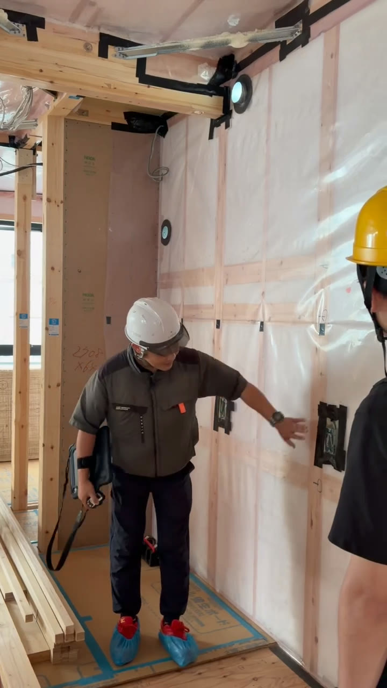
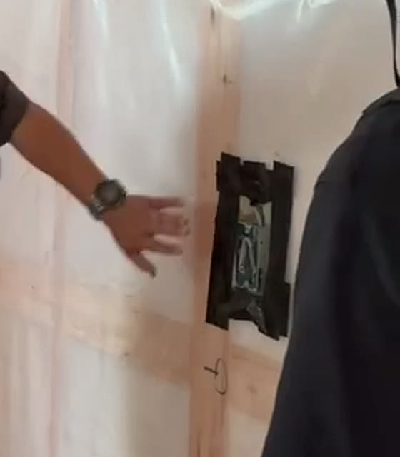
黒い枠＝気密ボックスとテープ。「必ず監督がチェックしています」
切り欠いた所にすき間が残る。テープだけでは将来はがれるおそれも（出典H・I）
切った所は、梁のまわりにテープをぐるっと。すべての梁で例外なく
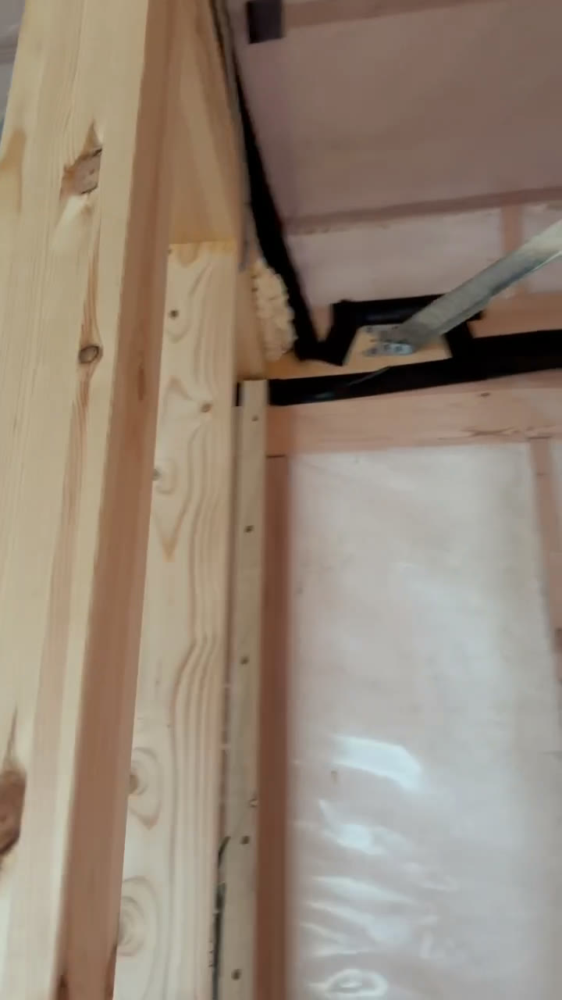
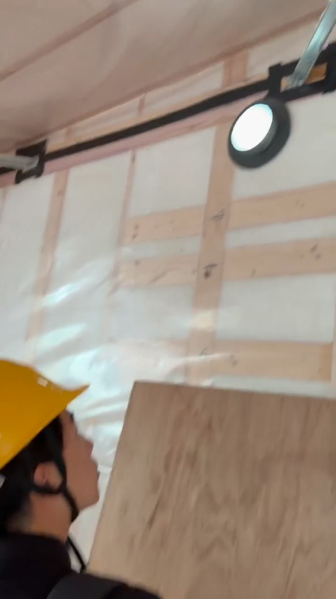
黒い線が気密テープ。「忘れると小屋裏で風が回る。実際にありました」
床と壁の取り合いに処理がない。床合板と柱のすき間から空気が入る（出典I・J）
35角を壁に当ててシートを切り、床面に気密テープを貼って留める。1階・2階とも同じ
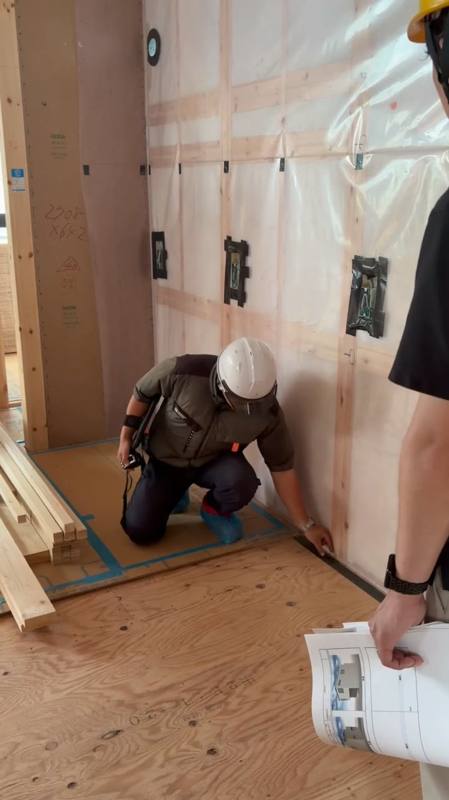
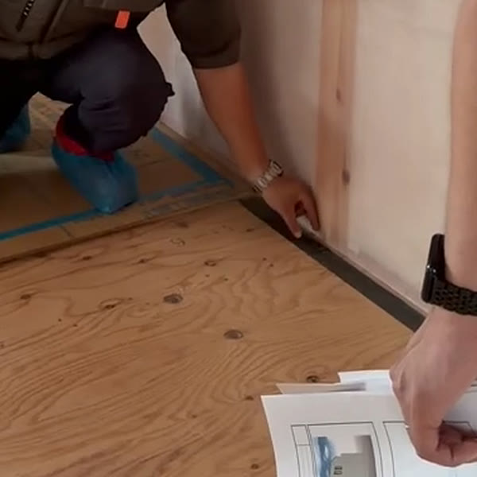
床際に沿った黒い線が気密テープ。外周ぐるっと一本につながる
窓の四隅でシートが切れたまま。後からテープで留めるのが難しい所（出典L）
四隅の切れ目に部材を貼り、窓の際はテープで一周。FIX窓も必ず処理する
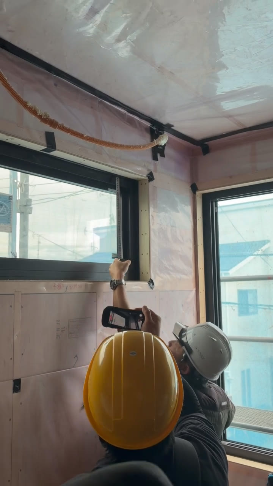
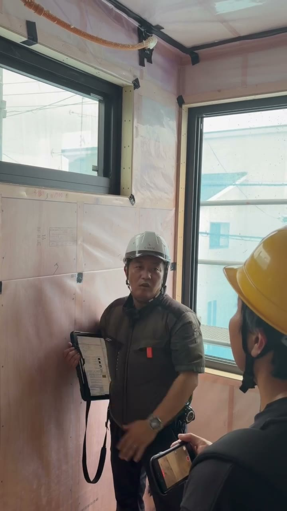
「最初はやっていなかった。手を当てると風がシューッと来た現場があった」
穴が管より大きく、すき間が残る。テープのヨレ、ウレタンの吹き残しも（出典O）
シートを丸く切り、切りっぱなしにせず専用の部材をかぶせて押さえる
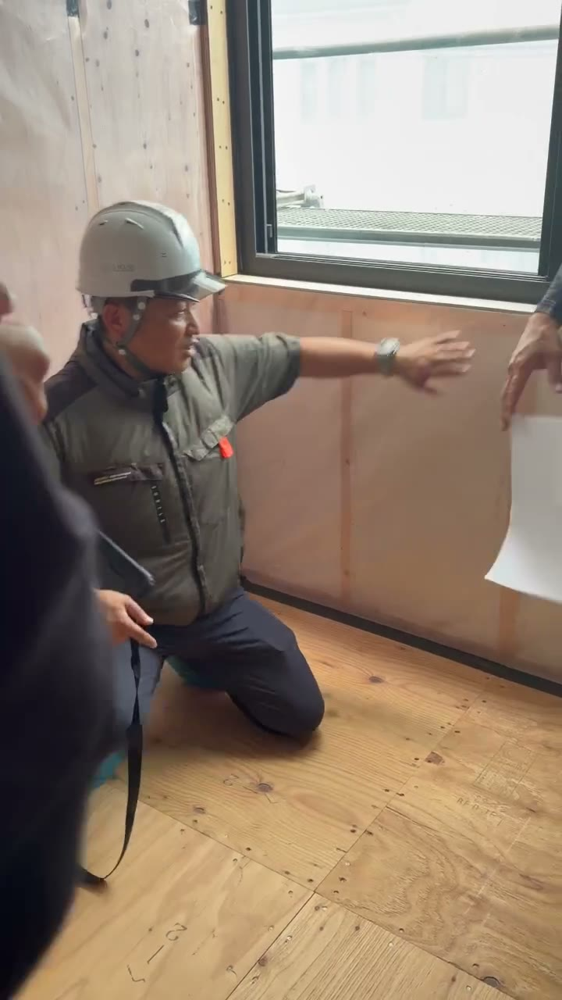
1センチはへこんでもいい計算で95ミリ
へこんだ所は補修して、また削る。吹く量が増える分、材料費はかかる。
削る分まで吹くので、材料費がかかる（クリップ05）
切った所を10センチほどのボードで押さえる。ボードの枚数が倍かかる（クリップ09・14）
「何回もやり替えさせました」。当たり外れがあるからこそ、現場で見る（クリップ05）
気密ボックスまわりは必ず監督が確認（クリップ22）
| 場所 | 実際にあったこと | 今のルール |
|---|---|---|
| 窓まわり | 手を当てると、風がシューッと来た | FIX窓まわりも必ず貼る |
| 梁まわり | 小屋裏で風が回った | 梁のまわりは、すべてテープでぐるっと |
| シートの切れ目 | 最初は押さえていなかった | 10センチほどのボードで押さえる |
| 吹付断熱 | 仕上がりに当たり外れがあった | やり替えさせる。いっぱい吹いて削る |
失敗をなかったことにせず、次の現場のルールに変える。
自社の現場で同じことが起きていないか、監督さんと一度話してみてください。
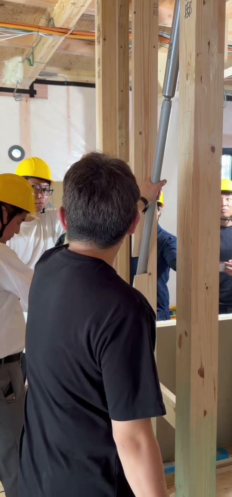
耐力壁・筋交いで取る。
エボルツ自体に耐力はない。
N50の釘穴が緩まないように守る。
すき間が開かないので、C値の劣化も防ぐ。
気密ボックスは吹付前に付いているか。シートは差し込んでテープ処理されているか
シートが切れた所に、テープがぐるっと一周しているか
壁と床の取り合いが、気密テープで一本につながっているか
FIX窓も含め、窓の際と四隅が処理されているか。手を当てて風を感じないか
丸く切ったシートが、部材で押さえられているか
へこみすぎていないか。シートとの間に空気層ができていないか
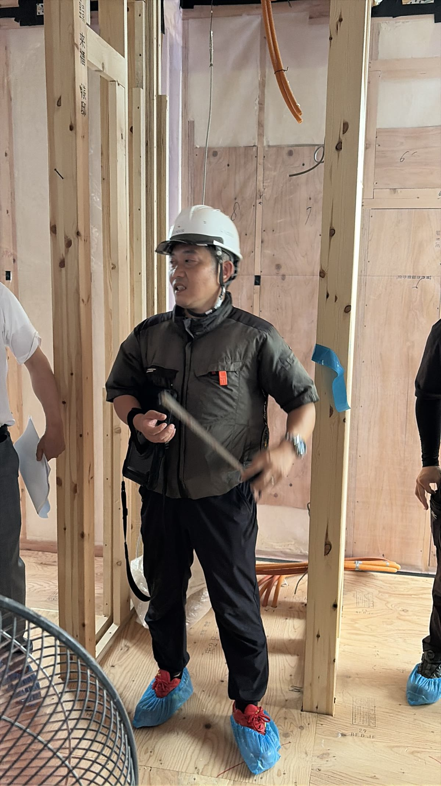
| 1 | コンセントは気密ボックスを先付け |
| 2 | 吹付断熱は厚めに吹いて削る |
| 3 | 梁まわりはテープでぐるっと |
| 4 | 床際は角材を当ててシートを切る |
| 5 | 窓まわり、手を当てたら風が来た |
| 6 | 耐震と制震は別の考え方 |